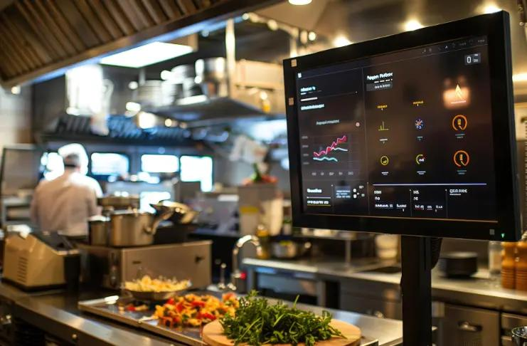
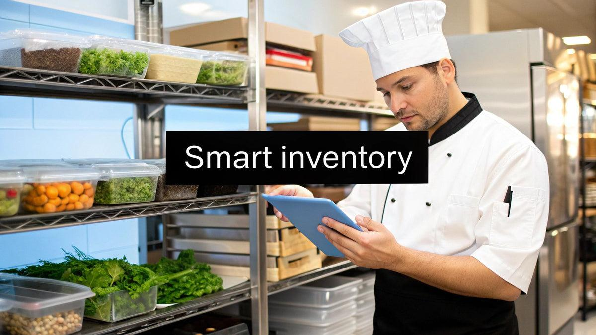
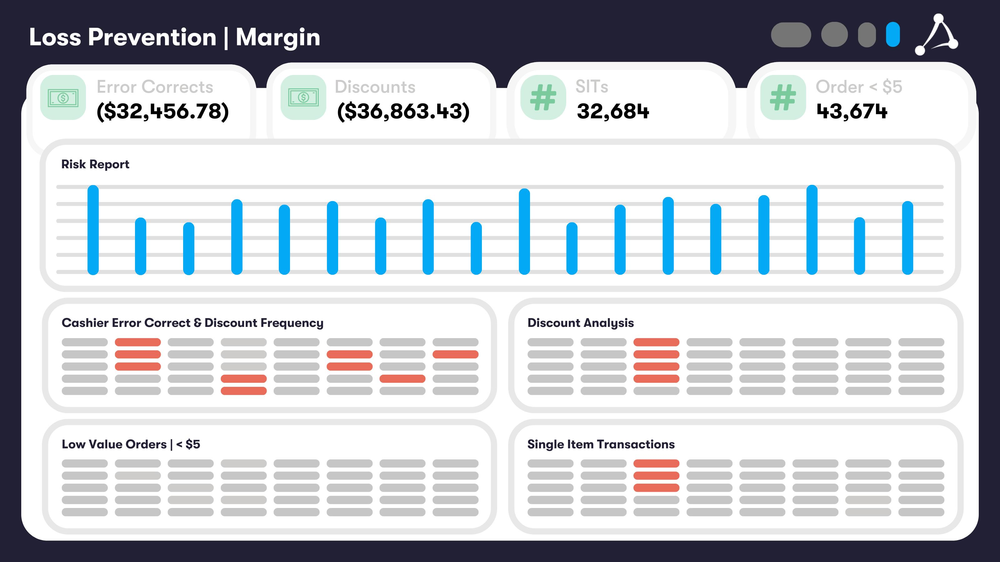
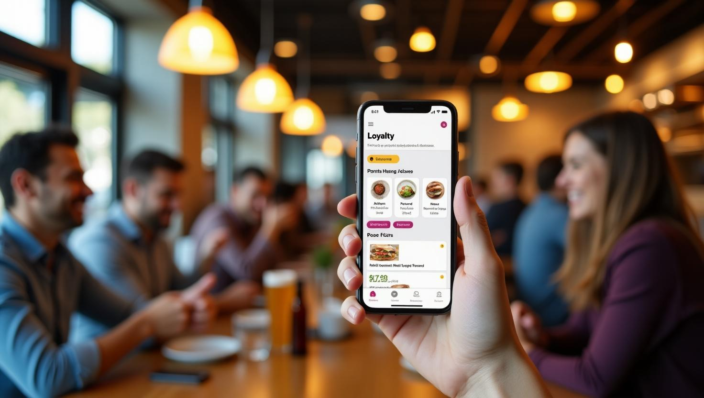
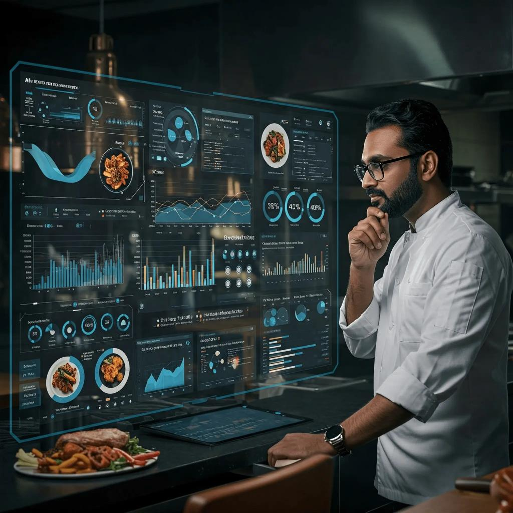

Full Platform
Six Intelligence Modules.
One Agentic Restaurant Command Centre.
Every feature is built specifically for the high-pressure UK hospitality environment not retrofitted from generic SaaS tools. Our proprietary Operational Context Graph and multi-agent coordination translate complex kitchen behaviours into actionable commercial KPIs that operators actually need.

Module 01 · Sales & Revenue
AI-Driven Sales & Revenue Intelligence
Real-time revenue dashboards tracking total sales (£128.4K/month ↑18.7%), order velocity, average order value (£45.18), and gross profit (32.6%) all linked to agentic menu interventions.
The Sales & Revenue module integrates with your POS to surface top-selling
items (Margherita Pizza: 1,246 | Paneer Tikka: 982 | Veg Biryani: 875),
order source breakdown, and revenue trends. Automated weekly forecasts
alert managers to emerging opportunities before the weekend rush turning
data into proactive margin protection.

Module 02 · Kitchen Ops
Kitchen Operations & Multi-Agent Coordination
The Operational Context Graph (OCG) maps every kitchen variable from grill station capacity to ingredient expiry enabling real-time agentic interventions that prevent service bottlenecks 15–20 minutes before they occur.
When order volume surges, the Kitchen Agent automatically "throttles"
high-labour dishes on the digital menu while promoting high-margin,
low-load alternatives that utilise at-risk chilled ingredients.
The Agentic Negotiation Protocol (ANP) resolves 85% of routine service
conflicts without human intervention.

Module 03 · Inventory
Smart Inventory Management & Waste Conversion
Real-time inventory health monitoring (85% healthy ↑12%) with automated "at-risk" ingredient detection and digital specials generation reducing spoilage by 18–22% on average.
The Inventory-to-Demand Conversion engine continuously scans stock
expiry windows. When "at-risk" chilled ingredients are detected,
the Menu Agent automatically creates a high-margin special,
cross-checks kitchen capacity, and promotes it on digital channels
turning potential waste directly into revenue.

Module 04 · Cost Control
Cost Control & Margin Protection
Track costs, reduce leakage, and improve profitability with AI-driven cost forensics that identify where your labour-to-load ratio is misaligned and where menu mix is eroding margins.
The Closed-Loop Operational Outcome Model generates comprehensive
Service Performance Reports linking every automated AI intervention
to financial margin protection. UK-specific tuning for 2025 National
Insurance hikes and minimum wage increases ensures operators see
exactly how agentic coordination protects their bottom line.

Module 05 · Customer Experience
Customer Experience & Personalisation Engine
Personalised service that keeps customers coming back. Customer satisfaction score: 4.7/5 ↑11%. The platform links dine-in behaviour patterns to menu optimisation recommendations.
By synchronising reservation flow, order history, and real-time
kitchen capacity, the Customer Experience module ensures guests
are never seated into an overwhelmed kitchen. Dynamic wait-time
predictions, personalised upsell recommendations, and post-visit
feedback loops create a loyalty engine powered by operational
intelligence.

Module 06 · Analytics
Real-Time Performance Analytics & Reporting
Real-time dashboards that make smarter decisions possible. Service-Time Predictive Analytics (STPA) diagnoses root causes of service drift enabling margin protection before the financial loss occurs.
The Federated Restaurant Logic Network (FRLN) enables anonymised
benchmarking across UK hospitality sites so trends from high-efficiency
London Italian groups can improve a Manchester independent bistro's
"Menu-to-Kitchen" strategy, creating collective intelligence that
individual operators could never achieve alone.
Competitor Analysis
How The RestaurantOS AI Compares
The RestaurantOS AI is the only platform combining live agentic coordination, real-time Menu-Kitchen synchronisation, and UK-specific operational intelligence in a single SME-optimised SaaS.
| Feature / Capability | Legacy POS (Zonal/Oracle) | Niche Waste (Winnow) | Labour Tools (7shifts) | Manual Ops | RestaurantOS AI |
|---|---|---|---|---|---|
| Live Agentic Coordination | No | No | No | No | ✓ Multi-Agent Logic |
| Menu-Kitchen Real-time Sync | Passive data only | No | No | Verbal only | ✓ Real-time throttling |
| Service-Time Decision Window | Post-service reports | Post-mortem only | Scheduling only | Reactive | ✓ Active intervention |
| Inventory-to-Demand Engine | Manual specials | Manual logging | No | Subjective | ✓ Automated conversion |
| Operational Context Graph | No | No | No | No | ✓ Proprietary OCG |
| Federated Logic Network | No | No | No | No | ✓ Sector-wide insights |
| UK 2025 Economic Tuning | Limited | Global-centric | General | None | ✓ NI/Wage focused |
| Cost Structure | High CapEx | Subscription | Seat-based | Time-intensive | ✓ SME-optimised SaaS |